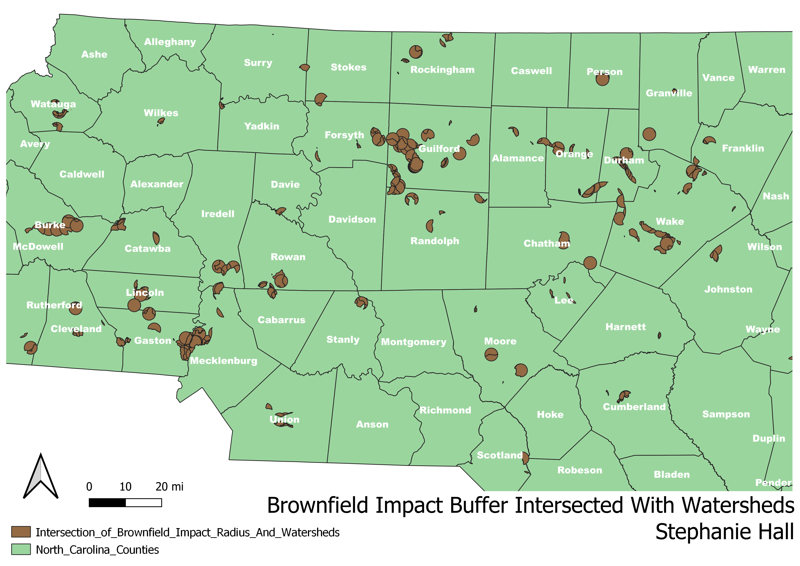

Homework 8: Geoprocessing Analysis
Stephanie Hall
Research Question: If brownfields have a contamination impact buffer of 1.8 miles, what portion of these areas intersect with drinking water watersheds in NC?
Explanation: Brownfields are sites indicated by the state to have some sort of harmful contamination that prevents development and could runoff into water sources. A research article linked
below indicates that brownfields have a contamination risk radius of around 1.8 miles. With this information in mind,
I created a map with layers for NC counties, drinking water watersheds, and brownfields. I used geoprocessing tools to create a 1.8 mile buffer around
the brownfields, representing their contamination radius. I then used geoprocessing tools to find an intersection between the brownfields + their 1.8 mile buffer and
the drinking water watersheds. This intersection indicates the points at which brownfield contamination infiltrates our drinking water. This answers my research question and provides vital
insight into what areas of NC have potential brownfield water contamination. As a note, I zoomed in the NC map to highlight population centers such as the research triangle and the Charlotte/Mecklenburg area.

Data used for this project
Watersheds Shapefile
Brownfields Shapefile
Research Article